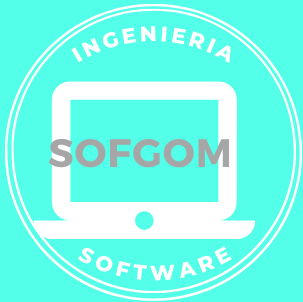

HO
LA.

Autora
Mi nombre es Maricela Gómez Franco
Estuadiante de Ingeniería de SoftwareHobbies: Escuchar música, leer, ver peliculas, practicar deportes
Email:mgf.ccm.137@gmail.com.
¿Cómo ser exitoso?
¿Qué necesito yo para ser exitoso?
Tener Objetivos Pasión Propósito de Vida Disciplina Integridad Felicidad Persistencia Ser Inquisitivo Ser Auto-consiente Audacia Tener Pensamiento Rápido y Decisivo Ser Buen comunicador Entusiasmo Ser Trabajador¿Qué necesito mi familia para ser exitosa?
Aceptar a Cada Miembro de la Familia Comunicación Abierta Dar Libertad a los Hijos Pasar el Tiempo Suficiente en Familia Realizar Actividades de Ocio y Satisfacción en Familia Trabajar para Mejorar la Calidad de Vida Ser un Buen Ejemplo Enseñar Valores a los Hijos Enseñar Educación Financiera Aceptar y Restar Diferencias Expresar Afecto Compartir Metas en Común¿Qué se necesita para alcanzar el éxito profesional?
Formación Continua Estar Dispuesto a Sacrificar Tener Metas Compromiso Disposición Comunicación Rodearse de Gente Exitosa Credibilidad Tener Buenas Relaciones No Trabajar Solo por Dinero¿Qué se necesita para ser un emprendedor?
Creatividad Ingenio Pasión Visión Liderazgo Paciencia Confianza en Uno Mismo Rsponsabilidad Receptividad Empatía DecisiónReflexión ¿Como ser EXITOSO?
Ser exitoso es que tu entendimiento del éxito determina el por qué,
cómo y qué líderes debes seguir. Determina el curso de tus acciones. Y decide qué
tipo de vida quieres crear. Es un llamado a cambiar los comportamientos que se ajustan
a lo que quieres lograr. A quién escuchas determina en quién te conviertes.
La forma como una persona gasta su dinero, dice mucho sobre su mentalidad y su interior.
La cultura hace que las personas se vuelvan tan superficiales que el hecho de que alguien
compre un objeto caro es la razón para seguirlo. Si lo que te impresiona de otra persona es
que pueda comprarse un auto lujoso, quizás tienes más problemas de los que crees.
Asi mismo establecer buenos hábitos son la fundación de la riqueza. La diferencia entre la
gente exitosa y la que no lo es son sus prácticas diarias. Puesto de manera
simple, las personas exitosas tienen muchos hábitos buenos y pocos malos.
Las personas encaminadas hacia el éxito piensan a largo plazo. Tienen metas
diarias, semanales, mensuales y anuales. Pero, ¿qué es una meta sin un plan
para alcanzarla? No sólo la gente exitosa tiene metas, también se les ocurren
formas de alcanzarlas y de asumir la responsabilidad.
Tips y consejos ¿Como ser EXITOSO?
Establece buenos hábitos diariamente.
2. Establece nuevas metas siempre.
3. Comprométete a mejorar.
4. Cuida tu salud.
5. Mejora tus relaciones.
6. Haz las cosas con moderación.
7. Termina todo.
8. Mantén una actitud positiva.
9. Ahorra dinero regularmente.
10. Rechaza los pensamientos que te limiten.
11. Vive de acuerdo a lo que tengas.
12. Lee diariamente.
13. No veas tanta televisión.
14. Haz más de lo requerido.
15. Habla menos y escucha más.
16. No te rindas.
17. Pasa tiempo con los que piensan igual que tú.
18. Encuentra a un nuevo mentor.
19. Conoce el “porqué”.
20. No le des ventaja al miedo.
21. Mejora tus capacidades.
Dinámica
Ahorcado
Deberas dar clic sobre el botón para iniciar el juego.
Las palabras usadas son las mismas que se encuentran en la opcion anterior ¿Cómo ser EXITOSO?
Evaluación
Evaluación ¿Como ser EXITOSO?
Deberas dar clic sobre el botón para realizar la evaluación correspondiente al tema ¿Como ser EXITOSO?, recuerda que la información de esta evaluación sirve para saber como piensas y que harías ante diferentes situaciones
Iniciar Evaluación